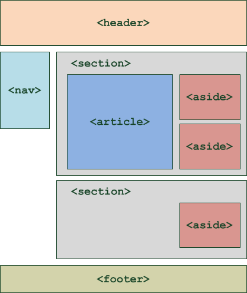

Structurer notre page HTML
Cette partie est largement inspirée d'Openclassroom - Apprenez à créer votre site web avec HTML5 et CSS3
Revenons un peu à notre page HTML. Nous avons, jusqu'à présent, ajouter des éléments de contenus (titres, paragraphes, images, listes, liens, etc.) à la suite les uns des autres, sans trop nous occuper de la mise en page. En général, une page web est constituée d'un en-tête (tout en haut), de menus de navigation (en haut ou sur les côtés), de différentes sections au centre et d'un pied de page (tout en bas).
Dans ce chapitre, nous allons nous intéresser aux balises HTML dédiées à la structuration du site. Ces balises ont été introduites par HTML5 et vont nous permettre de dire : "Ceci est mon en-tête", "Ceci est mon menu de navigation", "ceci est mon pied de page", etc.
Il nous faut dans un premier temps, avant gérer le positionnement des différentes parties en CSS, structurer notre document HTML.
Je vous renvoie à la partie Conteneurs sémantiques dans ma présentation.
Il existe 6 éléments (balises) HTML permettant de structurer un site web :
<header>: en-tête ;<footer>: pied de page ;<nav>: principaux liens de navigation ;<section>: section de page ;<aside>: informations complémentaires ;<article>: article indépendant.
L'en-tête
La plupart des sites web possèdent en général un en-tête (header en anglais). On y trouve le plus souvent un logo, une bannière, le slogan de votre site…
Vous devrez placer ces informations à l'intérieur de la balise<header>:
1 2 3 | |
La figure suivante, par exemple, représente le site du W3C (qui se charge des nouvelles versions de HTML et CSS notamment). La partie encadrée en rouge correspondrait à l'en-tête :
L'en-tête peut contenir tout ce que vous voulez : titre, images, liens, textes…
Le pied de page
À l'inverse de l'en-tête, le pied de page <footer> se trouve en général tout en bas du document. On y trouve des informations comme des liens de contact, le nom de l'auteur, les mentions légales, etc.
1 2 3 | |
La figure suivante vous montre à quoi ressemble le pied de page du W3C.
Principaux liens de navigation
La balise<nav>doit regrouper tous les principaux liens de navigation du site. Vous y placerez par exemple le menu principal de votre site.
Généralement, le menu est réalisé sous forme de liste à puces à l'intérieur de la balise<nav>:
1 2 3 4 5 6 7 | |
Nous verront plus loin comment styliser proprement un menu de navigation.
Voici le menu sur le site du W3C : <nav>

Une section de page
La balise<section>sert à regrouper des contenus en fonction de leur thématique. Elle englobe généralement une portion du contenu au centre de la page.
1 2 3 4 | |
Sur la page d'accueil du portail Free.fr, on trouve plusieurs blocs qui pourraient être considérés comme des sections de page (figure suivante).
Chaque section peut avoir son titre de niveau 1 (<h1>), de même que l'en-tête peut contenir un titre<h1>lui aussi. Chacun de ces blocs étant indépendant des autres, il n'est pas illogique de retrouver plusieurs titres<h1>dans le code de la page web. On a ainsi "Le titre<h1>du<header>», "Le titre<h1>de cette<section>», etc.
Informations complémentaires
La balise<aside>est conçue pour contenir des informations complémentaires au document que l'on visualise. Ces informations sont généralement placées sur le côté (bien que ce ne soit pas une obligation).
1 2 3 | |
Il peut y avoir plusieurs blocs<aside>dans la page.
Sur Wikipédia, par exemple, il est courant de voir à droite un bloc d'informations complémentaires à l'article que l'on visualise. Ainsi, sur la page présentant la planète Saturne (figure suivante), on trouve dans ce bloc les caractéristiques de la planète (dimensions, masse, etc.).

Un article indépendant
La balise<article>sert à englober une portion généralement autonome de la page. C'est une partie de la page qui pourrait ainsi être reprise sur un autre site. C'est le cas par exemple des actualités (articles de journaux ou de blogs).
1 2 3 4 | |
Par exemple, voici un article sur le Monde :

Résumé
Plusieurs balises HTML existe afin de nous aider à délimiter les différentes zones qui constituent une page web :
- <header>: en-tête ;
- <footer>: pied de page ;
- <nav>: principaux liens de navigation ;
- <section>: section de page ;
- <aside>: informations complémentaires ;
- <article>: article indépendant.
Ces balises peuvent être imbriquées les unes dans les autres. Ainsi, une section peut avoir son propre en-tête.
Attention
Ces balises ne s'occupent pas de la mise en page. Elles servent seulement à indiquer à l'ordinateur la sémantique de leur contenu. On pourrait très bien placer l'en-tête en bas de la page si on le souhaite.
Voici un petit schéma (figure suivante) pour vous aider à retenir le rôle de ces balises :

Ne vous y trompez pas : ce schéma propose un_exemple_d'organisation de la page. Rien ne vous empêche de décider que votre menu de navigation soit à droite, ou tout en haut, que vos balises<aside>soient au-dessus, etc.
On peut même imaginer une seconde balise<header>, placée cette fois à l'intérieur d'une<section>. Dans ce cas-là, elle sera considérée comme étant l'en-tête de la section.
Enfin, une section ne doit pas forcément contenir un<article>et des<aside>. Utilisez ces balises uniquement si vous en avez besoin. Rien ne vous interdit de créer des sections contenant seulement des paragraphes, par exemple.
Une autre organisation possible :
Ou encore :

Bref, vous l'aurez compris, tout est possible ! À vous de structurer correctement votre page avec ces éléments en fonction du résultat final attendu.
Exemple
1 2 3 4 5 6 7 8 9 10 11 12 13 14 15 16 17 18 19 20 21 22 23 24 25 26 27 28 29 30 31 32 33 34 35 36 37 38 39 | |
Ce code peut vous aider à comprendre comment les balises doivent être agencées. Vous y reconnaissez un en-tête, un menu de navigation, un pied de page… et, au centre, une section avec un article et un bloc<aside>donnant des informations sur l'auteur de l'article.
Si vous testez le résultat, vous verrez juste du texte noir sur fond blanc. C'est normal, il n'y a pas de CSS ! Par contre, la page est bien structurée, ce qui va nous être utile pour la suite.
Encore une fois ces balises sont seulement là pour expliquer à l'ordinateur "Ceci est l'en-tête", "Ceci est mon pied de page", etc. Elles n'indiquent pas, contrairement à ce qu'on pourrait penser, où doit être placé le contenu. C'est le rôle du CSS.
À vous de jouer
- Reprenez le site débuter en cours ; ou téléchargez cette base.
- Structurez-le avec les balises structurantes HTML (
<header>,<section>,<nav>, etc.).